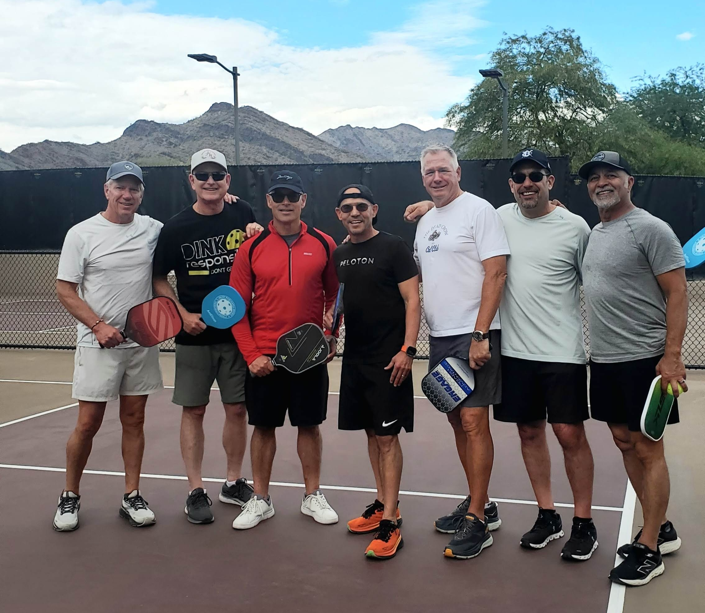

Welcome to the Pickleball Tracker Family! 🎉

Thank you for choosing Pickleball Tracker! Your support means the world to us, and we're committed to making your experience with the app as enjoyable as possible. We deeply value your feedback and suggestions - they're essential in helping make the app even better for our pickleball community.
Frequently Asked Questions
Getting Started
Pickleball Tracker is available for both iPhone and Apple Watch (watch not required). The app is designed to be simple and intuitive, letting you focus on your game while easily tracking your progress.
How do I track a game?
You can track games from either your iPhone or Apple Watch:
- On iPhone: Tap the "+" icon at the bottom of the screen to start a new game. Select your teammates and opponents, then enter the final score when the game is complete.
- On Apple Watch: Open the app on your watch and tap to create a new game. The watch app offers quick game entry right from your wrist - perfect for when your phone is in your bag.
Managing Players
Adding players to your game is simple and intuitive on both devices:
- Select Players: Tap the player spots on the New Game screen to choose your teammate and opponents
- Quick Selection: Your Today's Roster makes it fast to pick from the players you’re playing with right now
- Apple Watch: Quick game entry right from your wrist (perfect when your phone is in your bag)
Your player list automatically syncs between your iPhone and Apple Watch for a seamless experience.
Customizing Player Profiles
The Players screen allows you to maintain detailed information about each player:
- Access Player Details: Tap on any player in your Players list to view and edit their profile
- Playing Style: Document their playing style, preferred position, and tendencies
- Player Attributes: Note their strengths, weaknesses, and specific attributes
- Personal Notes: Keep track of strategies that work well with or against each player
- Quick Reference: Access these notes before matches to refresh your strategy
This information helps you better prepare for games and develop effective strategies for different player combinations.
Viewing Statistics and Insights
The iPhone app provides comprehensive statistics and insights:
- Win/Loss: Track your overall record and winning percentage
- My Performance: See scoring trends, point margin, close games, and more
- Top Players: Find your best teammates and toughest opponents
- Consistency: Track your playing patterns and improvement
- Badges: Earn achievements as you play more games
Achievement Badges
Unlock various badges as you play:
- Winner Winner: Win your first game
- 3 Wins in a Row: Win three consecutive games
- Shut Out: Win a game 11-0
- Win by 7+: Win a game by 7 or more points
- 5 Games in a Day: Play 5+ games in one day
- 10 Games in a Day: Play 10+ games in one day
- Comeback: Lose to a team and then beat them later that day
- Dynamic Duo: Win 3+ games with the same teammate in one day
- And many more to discover!
Data Backup and Security
Your game data is stored locally on your iPhone. To ensure your data is safe:
- Enable iCloud backup on your device
- Regularly back up your iPhone through iTunes or iCloud
- Your Apple Watch data syncs automatically with your iPhone
Scoring Rules
The app is flexible with scoring:
- Standard games to 11 points
- Support for different winning margins
- Track final scores regardless of format
- Quick score entry on both iPhone and Watch
Performance Tracking
The app helps you improve by tracking:
- Win/loss percentage
- Point differentials
- Clutch performance in close games
- Recent performance trends
- Teammate compatibility
- Opponent analysis